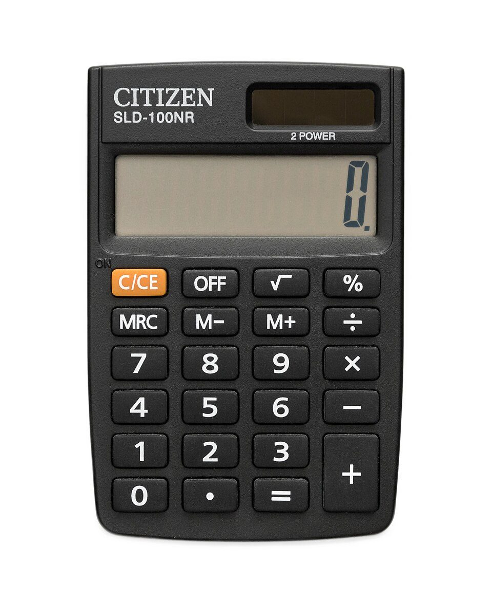

トップ › 税金・お金の手続き
源泉徴収票の読み方（2026年分）
- 調査日:
- 税金・お金の手続き
要点まとめ
- まず見るのは上の段の4つの数字。左から右へ税額が決まる[1][2]
- 「年収」は支払金額、「所得」は給与所得控除後の金額[3]
- 2026年分は基礎控除が最大104万円に上がった[4]
- 医療費控除やふるさと納税6団体以上は確定申告で精算する[5][6]
- 交付の期限は翌年1月31日。届かなければまず勤務先へ[7][8]

電卓（イメージ）写真: LoMit／Wikimedia Commons（CC BY-SA 4.0）
まず見る4つの数字
源泉徴収票は、1年間（1〜12月）の給与と、そこから差し引かれた所得税をまとめた書類です。上の段の4つの欄を左から順に見ると、税額がどう決まったかが分かります。
令和8年分 給与所得の源泉徴収票（簡略図）
1支払金額5,000,000
2給与所得控除後の金額3,560,000
3所得控除の額の合計額1,790,000
4源泉徴収税額90,300
配偶者の有無・扶養親族の数（特定・老人・その他・特親）・16歳未満の扶養親族の数—
社会保険料等の金額750,000
生命保険料の控除額—
地震保険料の控除額—
住宅借入金等特別控除の額—
摘要（前職の給与、5人目以降の扶養親族など）／基礎控除の額 1,040,000 など—
実際の様式とは欄の配置が違います。数字は下の計算例（年収500万円・独身・社会保険料75万円の架空の人）
1支払金額 ＝ 年収
1年間に支払が確定した給与・賞与の総額（税金・社会保険料を引く前）[1][3]
くわしく
- 年の途中で転職し、前職分を合わせて年末調整した場合は、前職分も含む[1]
- ローンや奨学金の手続きで「年収」「給与収入」と言われたら、この欄の金額[3][9]
2給与所得控除後の金額 ＝ 所得
年収から、会社員の「経費」にあたる給与所得控除を引いた金額[1][10]
くわしく
- 給与所得控除は年収に応じて決まる。年収360万円超〜660万円なら「年収×20%＋44万円」[10]
- 手続きで「所得額」と言われたら、この欄の金額[3]
- 年末調整をした人だけ記載される[1]
3所得控除の額の合計額
社会保険料、生命保険料、扶養、基礎控除などの控除を全部足した金額[1]
くわしく
- 医療費控除と寄附金控除（ふるさと納税）は年末調整では扱わないので、ここには入らない[1][5]
- ②からこの金額を引いた残りに税率をかける[2]
4源泉徴収税額 ＝ 1年分の所得税
年末調整で確定した1年分の所得税（復興特別所得税を含む）[1][11]
くわしく
- 毎月の給与から引かれた額との差は、年末調整で戻ってくるか追加で引かれる[2]
- 住宅ローン控除が税額以上あると0円になる[2]
- この欄が0円の人は、確定申告をしても所得税は戻らない[5]
税額が決まる流れ（計算例）
年収500万円・独身・社会保険料75万円・ほかの控除なしの架空の人で、国税庁の計算方法に当てはめました（2026年分のルール、計算は筆者）。[2]
- ①
支払金額 5,000,000円
1年間の給与・賞与の総額
- ②
給与所得控除 −1,440,000円 → 3,560,000円
500万円×20%＋44万円[10]
- ③
所得控除 −1,790,000円 → 1,770,000円
社会保険料75万円＋基礎控除104万円。1,000円未満は切り捨て[12][2]
- ④
税率5%をかける → 88,500円
課税所得195万円以下は5%[13]
- ⑤
×102.1%（復興特別所得税）→ 源泉徴収税額 90,300円
100円未満は切り捨て[2]
新制度・改正 同じ年収でも2025年分より税額が減る
この例では、基礎控除の引き上げで税額が27,600円減る（筆者の計算）
源泉徴収税額（年収500万円・独身・社会保険料75万円の例）
変更前：117,900円→変更後：90,300円
2025年分のルール → 2026年分のルール
くわしく
- 2025年分のルールでは、この人の基礎控除は68万円だった[12]
- 2026年分は、11月までは改正前の税額表で毎月引かれる[4][14]
- 12月の年末調整で、改正後のルールで1年分を計算し直す[4][14]
- 住宅ローン控除は、所得控除ではなく④の税額から直接引く「税額控除」[2]
ほかの欄の意味
配偶者・扶養親族の欄
申告した配偶者や扶養親族が正しく反映されているかを確認する[1]
くわしく
- 扶養親族の数は「特定（19〜22歳）・老人（70歳以上）・その他・特親」に分けて書かれる[1][4]
- 「特親」は2025年分から始まった特定親族特別控除の対象者（19歳以上23歳未満で所得が一定の範囲の親族）[15][4]
- 16歳未満の子は人数が書かれるが、扶養控除はない[1]
- 扶養控除の額は、一般38万円、特定63万円、老人48万円、同居老親等58万円（2026年分）[2]
社会保険料・生命保険料・地震保険料
社会保険料は全額、生命保険料は最高12万円まで控除[2]
くわしく
- 地震保険料の控除は最高5万円[2]
- 「社会保険料等の金額」には、健康保険・厚生年金などのほか、iDeCoの掛金も含まれる（内書き）[1]
- 2026・2027年分は、23歳未満の扶養親族がいると一般生命保険料の控除の上限が6万円になる[4]
住宅借入金等特別控除の額
年末調整で差し引いた住宅ローン控除の額[1]
くわしく
- 所得税から引ききれない分は「住宅借入金等特別控除可能額」の欄に書かれる[1]
- 住宅ローン控除の1年目は年末調整ではなく確定申告が必要。2年目からは年末調整で受けられる[16]
摘要欄・中途就職・退職の欄
転職した人は、前の勤務先の給与が摘要欄に書かれているか確認する[1]
くわしく
- 前職分を合わせて年末調整した場合、前の勤務先の名称、退職日、支払金額、税額、社会保険料が書かれる[1]
- 扶養親族が5人以上いるときの5人目以降なども摘要欄に書かれる[1]
- 年の途中で就職・退職した人は「中途就・退職」欄にその年月日が書かれる[1]
2026年分の変更点
新制度・改正 基礎控除・給与所得控除・扶養の条件が変わった
2026年12月から施行され、2026年分の年末調整から反映される[4]
基礎控除（合計所得489万円以下の場合）
変更前：本則58万円→変更後：104万円（本則62万円＋特例42万円）
2026・2027年分[12][4]
給与所得控除の最低額
変更前：65万円→変更後：74万円
2026・2027年分の特例（2028年分以後は69万円）[4][10]
扶養親族になれる所得の上限（給与だけの場合の年収）
変更前：58万円（年収123万円）→変更後：62万円（年収136万円）
2026年分から[4]
くわしく
- 財務省は、所得税がかからない年収の目安（課税最低限）が178万円になったと説明している[17]
- 178万円は、基礎控除104万円と給与所得控除74万円の合計[17]
- 基礎控除は所得が多いほど小さくなる（489万円超655万円以下は67万円など）[12]
- 受け取る人向けの源泉徴収票の様式は変わっていない[14]
- 国税庁は、年末調整で基礎控除申告書を出し忘れないよう、従業員向けに呼びかけている[18]
受け取ったらチェックすること
- 届いたか
交付期限は翌年1月31日（年の途中で退職した人は退職後1か月以内）
電子交付の場合もある。書面がほしいときは請求できる[7][19]
- 扶養
配偶者・扶養親族の人数が合っているか
家族の増減があった年は特に確認[2]
- 保険料
生命保険料・地震保険料の控除額が入っているか
申告した保険料控除が反映されているか[1]
- 転職
前の勤務先の分が摘要欄に入っているか
前職の源泉徴収票を出さないと年末調整されず、確定申告で精算になる[20]
- 申告
確定申告が必要か、すると戻るか（下の一覧）
2026年分の確定申告の期限は2027年3月15日。還付申告はそれより前でも出せる[21]
- 保管
年収の証明に使うので保管する
確定申告書に添付する必要はないが、申告書を作るときに使う[22]
届かない・なくしたとき
まず勤務先に依頼。期限を過ぎても届かなければ税務署に届け出られる[8]
くわしく
- 税務署に「源泉徴収票不交付の届出書」を出すと、税務署が勤務先に交付を促す[8][23]
- 勤務先に交付を求めた記録（いつ・誰に・どう求めたか）と、給与明細の写しを添える[23]
- 一度受け取ってなくした場合は、この届出の対象外。勤務先に再発行を頼む[23]
確定申告が必要な人・税金が戻る人
確定申告が必要な人（主な例）
給与以外の所得が20万円を超える人などは申告が必要[24]
確定申告すると税金が戻る人（主な例）
還付申告は、翌年1月1日から5年間出せる[5]
医療費控除
1年の医療費が10万円（所得200万円未満は所得の5%）を超えた
セルフメディケーション税制（市販薬が1万2,000円超）とはどちらか一方[22][26]
ふるさと納税
寄附先が6団体以上、またはほかの理由で確定申告する
確定申告するとワンストップ特例は無効になるので、全部の寄附を申告する[6]
住宅ローン控除の1年目
2年目からは年末調整で受けられる
[16]
年の途中で退職し、年末調整を受けていない
2026年分の基礎控除の引き上げを受けるにも申告が必要
源泉徴収税額が0円なら戻らない[5][14]
くわしく
- 2027年2月以降は、マイナポータル連携で確定申告に給与の情報を自動入力できる予定[27]
- 勤務先が給与支払報告書を電子で提出している場合に限られる[27]
住民税・年収の証明との関係
住民税は、同じ内容の「給与支払報告書」から計算される
勤務先が市区町村に出す書類から、翌年度の住民税（6月〜）が決まる[7][28]
源泉徴収票と住民税の決定通知書の違い（出典をもとに筆者が整理）
| 源泉徴収票 | 住民税の決定通知書 |
|---|
| 税金 | 所得税（国の税金） | 住民税（地方の税金） |
|---|
| 中身 | その年1〜12月の給与と税額 | 前年の所得をもとにした今年度の税額 |
|---|
| 天引き | 毎月の給与から（年末調整で精算） | 6月〜翌年5月の給与から |
|---|
くわしく
- 勤務先は給与支払報告書を、1月1日時点の住所地の市区町村に翌年1月31日までに出す[7]
- 例えば千代田区では、所得が給与だけで勤務先から給与支払報告書が出ていて、控除の追加がなければ住民税の申告は不要[29]
年収の証明に使える場面・使えない場面
使える場面は多いが、課税証明書を求められる手続きもある
国の教育ローン（日本政策金融公庫）
源泉徴収票か確定申告書の控えの直近分
[30]
奨学金の減額返還（日本学生支援機構）
給与所得者は「給与収入金額」（＝支払金額）で判定
[9]
保育料（例: 川口市）
源泉徴収票は使えず、課税証明書などが必要
[31]
今回確認できなかった点
- 2026年分の交付期限（2027年1月31日）が日曜日にあたる場合に、期限が翌日に延びるかどうか
- 非課税の通勤手当が支払金額に含まれないことの、国税庁の記載要領での明記
- 民間の住宅ローン・賃貸の審査で求められる書類（公的機関の案内はなし）
出典（31件）
閲覧日はいずれも2026年11月2日
- 令和8年分 給与所得の源泉徴収票等の法定調書の作成と提出の手引（第2章）（国税庁）
- 令和8年分 年末調整のしかた（国税庁）
- 「収入額」「所得額」の見方（富田林市）
- 令和8年分 年末調整のしかた「昨年と比べて変わった点」（国税庁）
- No.2030 還付申告（国税庁）
- No.1155 ふるさと納税（寄附金控除）（国税庁）
- No.7411「給与所得の源泉徴収票」の提出範囲と提出枚数等（国税庁）
- F5-4 源泉徴収票不交付の届出手続（国税庁）
- 所得証明書等の見方（減額返還制度）（日本学生支援機構）
- No.1410 給与所得控除（国税庁）
- 【記載要領】給与所得の源泉徴収票（国税庁）
- No.1199 基礎控除（国税庁）
- No.2260 所得税の税率（国税庁）
- 令和8年度税制改正（所得税の基礎控除の引上げ等関係）Q&A（国税庁）
- 令和7年度税制改正（基礎控除の見直し等関係）Q&A（国税庁）
- No.1211-1 住宅借入金等特別控除（国税庁）
- 特集 令和8年度 税制改正（国税）等について（財務省）
- 給与所得者（従業員）の方へ（令和8年分）（国税庁）
- 給与所得の源泉徴収票等の電子交付に係るQ&A（国税庁）
- No.2674 中途就職者の年末調整（国税庁）
- 暮らしの税情報（令和8年度版）申告と納税（国税庁）
- No.1120 医療費を支払ったとき（医療費控除）（国税庁）
- 「源泉徴収票不交付の届出書」を提出される前に、ご確認ください。（国税庁）
- No.1900 給与所得者で確定申告が必要な人（国税庁）
- No.2665 年末調整の対象となる人（国税庁）
- No.1129 特定一般用医薬品等購入費を支払ったとき（国税庁）
- 給与所得の確定申告がさらに簡単に！【利用者用ページ】（国税庁）
- 個人住民税（やさしい地方税）（総務省）
- 住民税の申告（千代田区）
- 国の教育ローン お申込みに必要な書類（日本政策金融公庫）
- 令和8年度 利用者負担（保育料）について（川口市）